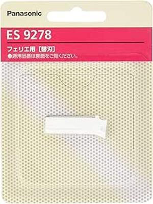

「まさか…また剃り味が落ちた？」 その不快感を「驚くほどなめらか」に変える、パナソニック 替刃 フェリエ フェイス用 ES9278の真価

皆さん、こんにちは。毎日のメイク前や、ちょっとしたお出かけ前、鏡を見て「あ、うぶ毛が…」と気になったことはありませんか？ あるいは、カミソリでのうぶ毛処理で肌がヒリヒリしたり、思わぬ肌トラブルに見舞われたりして、「もっと手軽に、もっと肌に優しく、うぶ毛を処理する方法はないものか」と感じていませんか？
多くの女性が、顔のうぶ毛処理に漠然とした不安を抱えながらも、具体的な対策を講じないまま過ごしているのが現状です。手軽なカミソリは肌への「負担」が大きく、電気シェーバーは「切れ味の低下」や「衛生面」に不満を抱えがちです。私もこれまで、うぶ毛処理の失敗によって、メイクのノリが悪くなったり、肌荒れに悩んだりする姿を数多く見てきました。そのたびに、「もっと手軽に、もっと肌に優しく、そしてもっと自信を持って顔のうぶ毛を処理する方法はないものか」と感じていたのです。
過去の「うぶ毛処理トラブル」がもたらす不満と諦め
あなたは過去に、こんな経験をしたことがないでしょうか？
「新しい替刃に交換したばかりなのに、すぐに剃り味が悪くなってしまった…」
「カミソリでうぶ毛を剃ったら、肌が赤くなってヒリヒリする！」
「メイク前にうぶ毛を処理しようとしたら、全然剃れなくてイライラした…」
「肌が敏感だから、どんなシェーバーを使っても合わないんじゃないか…」
これらの経験は、うぶ毛処理に対する不信感を生み、あなたの肌の「快適さ」とメイクの「仕上がり」を奪ってしまいます。特に、デリケートな顔に直接触れるシェーバーの刃は、常に清潔で切れ味の良い状態を保つことが非常に重要です。しかし、手洗いで隅々まで完璧に洗浄するのは、想像以上に手間がかかり、しかも完璧とは言えません。そのたびに、「負担軽減」への切実な願いへと繋がります。私たちは、常に「もっと良い手入れ方法はないか」という疑問を抱えながら、妥協して使い続けてきたのかもしれません。
なぜ、パナソニック 替刃 フェリエ フェイス用 ES9278があなたの救世主となるのか？
今日、皆さんにご紹介したいのは、そんなあなたの悩みを解決し、毎日のうぶ毛処理を「驚くほどなめらか」な体験に変えるための強力なパートナーとなる製品です。それが、パナソニック 替刃 フェリエ フェイス用 ES9278です。
なぜこの替刃が、あなたのフェイスケアに革命をもたらすのか。それは、単に刃を交換するだけでなく、あなたの「不満」を取り除き、「新品同様の切れ味」と「肌への優しさ」を維持してくれるからです。
多くの電動フェイスシェーバーユーザーが経験する「切れ味の低下」は、実は刃の摩耗や、微細なヒゲカス、皮脂汚れが刃の隙間に詰まることによって引き起こされます。使い古した刃は、本来の性能を発揮できず、結果として肌への摩擦が増え、カミソリ負けや肌荒れの原因にもなりかねません。
パナソニック 替刃 フェリエ フェイス用 ES9278は、パナソニックのフェイスシェーバー「フェリエ」シリーズ専用の替刃です。フェリエ本体と組み合わせることで、まるでプロの理容師が丁寧にシェービングするかのように、あなたの顔のうぶ毛を優しく、そして確実に除去してくれます。
具体的には、この替刃は「肌にやさしい丸い刃先」が特徴です。これは、フェリエシリーズが長年培ってきた「肌への優しさ」へのこだわりが凝縮された部分です。従来のカミソリのように鋭利な刃ではなく、丸みを帯びた刃先が肌に直接触れることを防ぎ、肌への摩擦や刺激を最小限に抑えます。これにより、敏感肌の方でも「安心感」を持って使用でき、剃った後のヒリつきや赤みを大幅に「負担軽減」します。これはまさに「効率」的なフェイスケアであり、あなたの肌と自信への「安心感」を確かなものにしてくれます。
他の「それっぽい」製品との決定的な違い
世の中には、様々なメーカーから顔用シェーバーの替刃や、使い捨てのフェイス用カミソリなども存在します。価格帯も様々で、どれを選べば良いのか迷ってしまう方も少なくないでしょう。しかし、ここで皆さんに強くお伝えしたいのは、パナソニック 替刃 フェリエ フェイス用 ES9278が、他の「それっぽい」製品とは一線を画す、確かな「信頼」と「品質」、そして「システム」を備えているという点です。
講義：替刃の素材と設計の重要性
シェーバーの刃は、直接肌に触れる部分であり、その素材や設計は、剃り味だけでなく肌への影響を大きく左右します。安価な替刃の中には、切れ味がすぐに落ちてしまったり、耐久性に劣るものもあります。また、刃と本体のフィット感が悪かったりすると、本来の性能を発揮できなかったり、異音が発生したりすることもあります。
その点、パナソニック 替刃 フェリエ フェイス用 ES9278は、パナソニックのフェリエシリーズの本体性能を最大限に引き出すために、厳密な品質管理のもとで製造されています。専用設計であるため、本体との「互換性」が完璧で、スムーズな装着と安定した動作を実現します。
この替刃の素材は、耐久性と切れ味を両立させるために厳選されており、長期間にわたって「効率」的なうぶ毛処理を可能にします。そして、繰り返しになりますが、肌に直接触れない「丸い刃先」という設計は、単なる切れ味の良さだけでなく、敏感な顔の肌への「安心感」と「負担軽減」を徹底的に追求した結果なのです。これは、単なる消耗品ではなく、あなたの肌を守るための「投資」と考えることができます。
「手間いらず」と「衛生面」の「安心感」
パナソニック 替刃 フェリエ フェイス用 ES9278の大きな魅力の一つは、「手間いらず」であることです。定期的な替刃交換は、シェーバーの性能を維持するための最も簡単で「効率」的な方法です。新しい替刃に交換するだけで、買ったばかりの頃のような切れ味を取り戻し、毎日のうぶ毛処理が格段にスムーズになります。
「替刃交換って面倒なんじゃないの？」と思われるかもしれませんが、フェリエシリーズの替刃交換は非常にシンプルです。工具などは一切不要で、古い刃を取り外し、新しい刃をカチッと音がするまで取り付けるだけ。この手軽さがあるからこそ、「切れ味が落ちてきたな」と感じたときに、すぐに「負担軽減」で対処できるのです。
そして、もう一つ、この替刃がもたらす素晴らしい利点が「衛生面」です。どんなに丁寧に手入れをしていても、使い続けるうちに刃には微細な汚れが蓄積していきます。特にうぶ毛は細く、刃の隙間に入り込みやすいため、雑菌が繁殖する温床となる可能性も否定できません。
新しい替刃に交換することで、常に清潔な刃でうぶ毛処理を行うことができます。これにより、肌トラブルのリスクを減らし、肌への「安心感」を確保することができます。これは、敏感肌の方や、衛生面を特に重視する方にとって、非常に大きなメリットと言えるでしょう。清潔な刃でうぶ毛処理を行うことは、肌への「負担軽減」にも繋がり、毎日のフェイスケアが「効率」的かつ快適になります。
あなたの「過去の失敗」に寄り添う共感表現
「でも、替刃って結構高いんでしょ？ 結局、使い捨てカミソリの方が安いんじゃないの…」
そう思われた方もいらっしゃるかもしれません。私も、その気持ちは痛いほどよく分かります。新しいものを手に入れたときの高揚感は素晴らしいですが、それが一時的なものに終わってしまう経験は、誰にでもあるでしょう。しかし、パナソニック 替刃 フェリエ フェイス用 ES9278は、その「過去の疑念」を打ち破る力を持っています。
なぜなら、この替刃への投資は、単なる消耗品の購入ではなく、「快適なフェイスケアを維持するための投資」に変えてくれるからです。
例えば、使い捨てカミソリは確かに安価ですが、その分、肌への刺激が強かったり、頻繁な交換が必要だったりします。また、一度使ったら捨てるため、長期的に見れば環境への「負担」も無視できません。
しかし、フェリエの本体を長く使い続け、替刃を定期的に交換することで、あなたは「常に最高の剃り味」と「肌への優しさ」を両立させることができます。肌トラブルが減れば、その分のケア用品や医療費も「負担軽減」できるかもしれません。これは、長い目で見れば経済的な「効率」化にも繋がり、家計の「負担軽減」にも貢献します。
そして、この替刃がもたらすもう一つの共感ポイントは、肌への自信です。うぶ毛のないなめらかな肌は、メイクのノリを格段に良くし、あなたの表情をワントーン明るく見せてくれます。人と会う時、マスクを外す時、写真に写る時…どんな場面でも、自信を持って「素肌」を見せられる喜びは、何物にも代えがたい「安心感」です。この「肌への自信」こそが、毎日のフェイスケアを心地よい習慣へと変えてくれるのです。
類似製品との「論理的な」比較と優位性
ここで、もう少し踏み込んで、他の選択肢とパナソニック 替刃 フェリエ フェイス用 ES9278の比較について考えてみましょう。
市場には、様々なメーカーから顔用シェーバーの替刃や、汎用性の高いシェーバーのヘッド部分なども提供されています。しかし、重要なのは、その替刃がどれだけ「総合的」で「専門的」であるかという点です。
講義：電動シェーバーの「刃」と「駆動」の相関関係
電動シェーバーは、刃とモーターが連携して初めてその性能を発揮します。替刃は、単に刃の部分だけでなく、その刃を支えるフレームや、本体との接続部分など、様々な要素が組み合わさってできています。汎用性の高い替刃や、非純正の替刃を使用した場合、本体のモーターとの相性が悪く、本来の回転数を引き出せなかったり、異音が発生したりする可能性があります。これにより、本来の「切れ味」や「耐久性」が損なわれ、結果として「効率」的なうぶ毛処理ができなくなることもあります。
その点、パナソニック 替刃 フェリエ フェイス用 ES9278は、パナソニックのフェリエシリーズの本体と完璧にマッチするように設計されています。これは、シェーバー本体と替刃の性能を最大限に引き出すための「専門家」の仕事です。刃と本体の「最適な連携」によって、肌への「負担軽減」と、より「効率」的なうぶ毛処理を実現します。この「専用設計」であるという点が、他の製品との決定的な「信頼」の差を生み出しているのです。
また、替刃の「交換時期の目安」も明示されているため（約1年）、計画的に替刃を交換することができ、突然の剃り味低下に悩まされることもありません。この「計画性」も、日々のフェイスケアにおける「安心感」へと繋がります。
口コミが語る「真実」と「理想の未来」
実際にパナソニック 替刃 フェリエ フェイス用 ES9278を使っている方々からは、数多くの喜びの声が届いています。それは、単なる商品レビューというよりも、彼らのフェイスケアに起きた「変化」を語る生の声です。
ある20代の女性は、「フェリエを愛用していますが、替刃を交換するだけで、まるで新品に買い替えたかのように剃り味が蘇って感動しました！ 肌が敏感なので、カミソリは怖くて使えなかったのですが、これなら肌に優しく、しかもスピーディーにうぶ毛処理ができます。メイクのノリも全然違います！」と喜びを語っています。
また、50代の女性は、「以前は、フェリエが切れ味が悪くなったと感じたら、本体ごと買い替えていました。でも、替刃を交換するだけで良いと知って、今回初めて替刃を購入しました。本当にびっくりするほど切れ味が良くなり、もっと早く知りたかったと思いました。これなら経済的にも助かりますし、これからも長くフェリエを使い続けられます」と、その経済性と「安心感」を高く評価しています。
これらの声は、パナソニック 替刃 フェリエ フェイス用 ES9278が、単なる消耗品ではなく、人々の「負担軽減」を促し、より良い未来へと導く「パートナー」であることを物語っています。
パナソニック 替刃 フェリエ フェイス用 ES9278を日々の生活に取り入れることで、あなたはどんな未来を手に入れることができるでしょうか？
想像してみてください。毎朝、メイクを始める前に、鏡の前でサッとフェリエでうぶ毛を処理する。新しい替刃の切れ味で、あっという間になめらかな肌に。ファンデーションが吸い付くようにフィットし、メイクの仕上がりが格段に美しくなる喜び。
外出先で、ふと鏡を見たときに、顔のうぶ毛が気になって慌てることもなくなるでしょう。常に清潔でなめらかな肌を維持できる「安心感」。肌トラブルの心配なく、自信を持って人と顔を合わせられる日々。
このように、パナソニック 替刃 フェリエ フェイス用 ES9278は、あなたの「日々の気づき」を促し、小さな「行動」へと繋げ、それが積み重なることで、やがて大きな「変化」となってあなたの理想的な未来を実現する手助けをしてくれるのです。
講義：肌への「労り」と「自己投資」の重要性
顔の肌は、常に外界にさらされており、非常にデリケートな部分です。不適切なうぶ毛処理は、肌に大きな「負担」をかけ、乾燥や炎症、色素沈着などの原因となる可能性があります。一度傷ついた肌を元の状態に戻すには、時間と労力がかかります。
パナソニック 替刃 フェリエ フェイス用 ES9278への投資は、決して高価な買い物ではありません。それは、あなたの未来の肌、そして自信に対する「賢い投資」なのです。この小さな投資が、将来的な肌トラブルの「負担軽減」につながったり、あるいは常に美しい肌を維持できる「安心感」につながったりする可能性を秘めているのです。
考えてみてください。もしあなたが、切れ味の悪い刃や不潔な刃でうぶ毛処理を続けていたとしたら、どうなるでしょうか？ もしかしたら、肌荒れが慢性化し、メイクで隠しきれないほどのトラブルを抱えてしまうかもしれません。
しかし、今日からパナソニック 替刃 フェリエ フェイス用 ES9278を使い始めることで、あなたは未来の自分に、より美しく、より健康な肌をプレゼントすることができるのです。
この替刃は、まさにあなた自身の「フェイスケアの専属スタイリスト」のような存在です。定期的な交換は、あなたのフェリエを「常に最高の状態」に保ち、その性能を最大限に引き出してくれるでしょう。
あなたの肌は、あなたが与えるケアによって、常に変化しています。その変化を良い方向へと導き、美しさを維持すること。これが、快適なフェイスケアの基本であり、最も重要なポイントです。
パナソニック 替刃 フェリエ フェイス用 ES9278は、その基本を誰もが手軽に実践できるように設計されています。複雑な操作は不要。ただ交換するだけ。このシンプルさの中にこそ、あなたが美しい肌を維持し、理想の自分へと近づいていくための秘訣が隠されています。
あなた自身の肌と向き合い、その変化を喜び、そして次の目標へと進む。そんなポジティブなサイクルを、このパナソニック 替刃 フェリエ フェイス用 ES9278と共に始めてみませんか？ あなたの自信に満ちた未来は、まさにここから始まるのです。
商品詳細・ご購入はこちら
次の商品を見る→